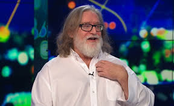

Интересные факты и личная жизнь

Женат на Лизе Ньюэлл, имеет двух сыновей. Ньюэлл страдал дистрофией Фукса — врождённым заболеванием, при котором разрушается роговица глаза, и в какой-то момент его зрение упало до критического уровня, но две операции по пересадке роговицы вернули ему зрение[10]. «Я не просто стал снова видеть, я стал видеть лучше, чем когда бы то ни было. Я будто бы оказался в волшебной сказке. Тогда до меня дошло, насколько быстро наступает будущее», — вспоминает Ньюэлл[5]. В числе любимых игр Ньюэлл называл Super Mario 64, Doom, а также Star Trek, в которую он играл на системе Burroughs. Игра Doom убедила его в том, что видеоигры являются многообещающим будущим в сфере развлечений, а Super Mario 64 доказала ему, что игры тоже являются искусством. Ньюэлл являлся подписчиком популярной MMORPG игры от Blizzard Entertainment — World of Warcraft[11]. Ньюэлл заявил, что является поклонником анимационного сериала «Дружба — это чудо»[12]. По совету друга в качестве хобби Ньюэлл занялся слесарным делом. Вместо машины он поставил в гараже шлифовальный и фрезерный станки, а также бочки с солью для воронения стали. В свободное время Ньюэлл делает и обрабатывает приспособления и игрушки вроде подставок для iPad и мечей. «Мне показалось, что это хороший отдых после постоянного сидения перед экраном», — поясняет Ньюэлл[5].